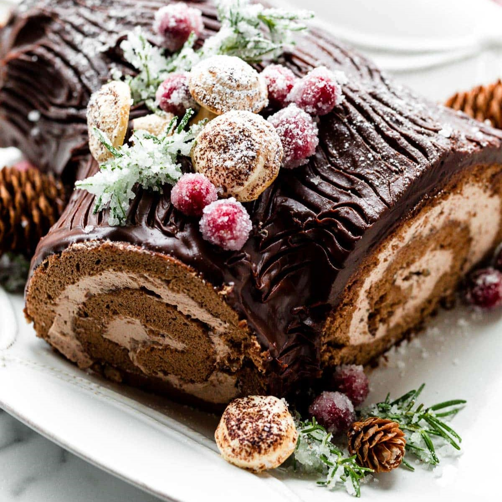

Recipe from allrecipes
Bûche De Noël (Yule Log)
A Christmas classic that is moist and airy with a sweet buttercream.
Ingredients
Buttercream Filling:
- 1 ⅔ cups powdered sugar
- ½ cup unsalted butter, at room temperature
- 2 tablespoons coffee-flavored liqueur
- 1 ½ tablespoons unsweetened cocoa powder
- 1 pinch salt
- ⅓ cup mascarpone cheese
Sponge Cake
- 2 tablespoons melted butter
- ½ cup unsweetened cocoa powder
- 2 tablespoons all-purpose flour
- ½ teaspoon kosher salt
- 5 large eggs, at room temperature
- ⅔ cup white sugar
- ½ teaspoon vanilla
- 2 tablespoons powdered sugar, or as needed
Ganache Frosting
- 1 cup heavy cream, boiling-hot
- 1 (8 ounce) package dark chocolate chips
Directions
- Make the buttercream filling: Whip powdered sugar, butter, coffee-flavored liqueur, cocoa powder, salt together in the bowl of a stand mixer fitted with the whisk attachment on high speed.
- Transfer filling mixture to a separate bowl and add mascarpone cheese. Mix until combined; set aside. Clean and dry the stand mixer bowl.
- Preheat the oven to 400 degrees F (200 degrees C).
- Prepare a 13x18-inch rimmed sheet pan for the sponge cake: Brush a little melted butter over the sheet pan, then line the pan with parchment paper, and brush remaining melted butter on top.
- Whisk cocoa powder, flour, and salt together in a bowl, making sure to break up any clumps.
- Place eggs in the clean bowl of your stand mixer. Add sugar and whip with the whisk attachment until fluffy, thick, and very light in color, 2 to 3 minutes. Add vanilla and 1/2 of the cocoa powder mixture; mix on low speed for a few seconds. Add the remaining cocoa mixture and mix on low for a few seconds. Switch to high speed and mix until the mixture is moistened but not fully blended. Pull off the whisk attachment and use it to whisk the batter by hand until evenly blended.
- Pour batter onto the prepared sheet pan and spread out with a spatula, almost to the edges, but not quite. Tap the pan on the counter several times to remove any large air bubbles.
- Bake in the preheated oven until the top is dry and the edges start to pull away from the sides, 8 to 10 minutes.
- While the cake is baking, sift powdered sugar onto a clean kitchen towel to cover an area slightly larger than the sponge cake.
- Remove cake from the oven. Run a knife around the edges of the pan. Dust some powdered sugar over the top. Run a spatula under the parchment paper to make sure it's not stuck to the pan.
- Quickly flip the pan on top of the sugared area on the towel to invert the cake. Carefully remove the parchment paper, then sift more powdered sugar over the cake. Gently roll the cake up inside the towel; allow to cool for 15 minutes.
- Carefully unroll the cooled cake. Dollop as much buttercream filling as you like on top, reserving some for later; spread to the edges. Roll cake up over the filling, using the towel to lift it if needed. Sprinkle more powdered sugar on top over the log, then wrap in plastic wrap. Refrigerate until firm, about 2 hours.
- Make the ganache frosting: Pour hot cream over chocolate chips in a bowl. Let sit for 1 minute, then whisk until chocolate is melted.
- Make an angled cut 3 inches from one end of the log. Place log on a parchment-lined sheet pan. Apply some filling to the angled slice and attach it to one side of the log. Spread a layer of ganache all over the cake, except for the swirls on the ends. Refrigerate for 15 minutes to firm up the ganache.
- Use the tip of a knife to carve lines into the ganache to create the appearance of tree bark. Refrigerate until completely chilled.
- Dust with cocoa powder and powdered sugar before serving.